6.1 Волновой метод расчета звукового поля в замкнутом объеме
Постановка задачи
В
результате многократного отражения звуковых волн от границ помещения возникает
замкнутое трехмерное волновое поле. Обычно линейные размеры помещения
значительно больше длины звуковых волн, поэтому замкнутый объем помещения
представляет собой колебательную систему со спектром собственных частот,
зависящим, в первую очередь, от формы и размеров помещения. Теория волновой
акустики рассматривает два режима колебаний воздушного объема помещения:
собственные затухающие колебания или вынужденные колебания (под действием
источника звука).
Рассмотрим задачу о колебаниях воздуха,
заполняющего объем помещения в предположении, что помещение имеет форму
прямоугольного параллелепипеда размерами l×b×h c жесткими поверхностями,
полностью отражающими звук.
Волновое
уравнение в декартовых координатах имеет вид:
где
p(x,y,z,t) – звуковое давление, c – скорость звука.
С
учетом того, что 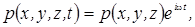 волновое уравнение переходит в уравнение
Гельмгольца:
в
котором p = p(x,y,z) – координатная часть звукового
давления, 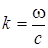 - волновое число звуковой
волны.
На
жестких поверхностях, ограничивающих объем помещения, составляющие колебательной
скорости, нормальные к поверхности, должны обращаться в
нуль:
Для
звукового давления граничные условия принимают форму:
Собственные
колебания и собственные частоты
прямоугольного
объема
Общее
решение уравнения Гельмгольца с такими граничными условиями равно сумме частных решений,
имеющих вид:
где
m, n, p = 0, 1, 2, 3 …
Эти
функции называются характеристическими или собственными функциями уравнения
Гельмгольца. Каждой собственной функции соответствует собственное значение параметра k:
Так
как величина k представляет собой волновое число, то в
прямоугольном помещении с жесткими стенками существует набор собственных (резонансных)
частот:
Собственное колебание pmnp с частотой fmnp принято называть модой (m, n, p). Физически каждая мода представляет собой стоячую плоскую волну с волновым вектором 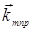, проекции которого на оси координат равны:
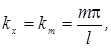
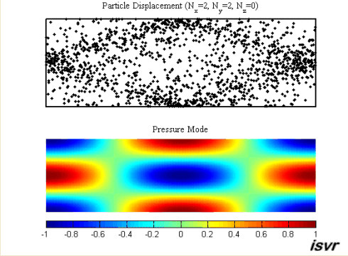
Движение частиц воздуха и колебания звукового давления для моды (2, 2, 0)
Так
как волновой вектор перпендикулярен волновой поверхности, направление, вдоль
которого устанавливается каждая из стоячих волн pmnp, образует с осями
координат углы α, β и γ, величина которых определяется
соотношениями:
Очевидно,
что 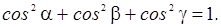
Классификация
собственных колебаний замкнутого объема
В
зависимости от ориентации волнового вектора
Осевыми
называются моды, для которых волновой вектор направлен параллельно одному из
ребер прямоугольного помещения (см. рисунок). Существуют три вида осевых
мод:
а) x-осевые (α = 0, β = γ = 900) с частотами 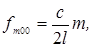
б) y-осевые (β = 0, α = γ = 900) с частотами 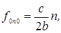
в) z-осевые (γ = 0, α = β = 900) с
частотами 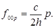
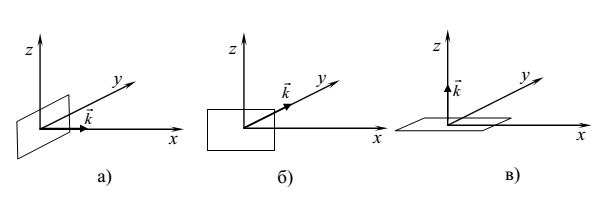
Скользящими
(касательными) называют моды, для
которых волновой вектор направлен параллельно одной из координатных плоскостей.
Можно выделить:
а) xy-касательные моды (α ≠ 0, β ≠ 0, γ = 900) с частотами
б) xz-касательные моды (α ≠ 0, γ ≠ 0, β = 900) с частотами
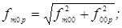
в) yz-касательные моды (γ ≠ 0, β ≠ 0, α = 900) с частотами
Косые моды имеют волновой вектор, у которого ни одна из компонент не обращается в нуль: α ≠ 0, β ≠ 0, γ ≠ 0. Частоты косых мод могут быть найдены по формуле
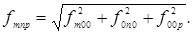
Особенности
спектра собственных частот колебаний
замкнутого
объема
Для
конкретного помещения можно рассчитать все собственные частоты, лежащие в
заданном интервале значений. При этом некоторые собственные частоты могут
оказаться вырожденными, то есть одному
значению частоты может соответствовать несколько (N) различных собственных
колебаний (мод). Количество
собственных частот, попадающих в заданный интервал, зависит от ширины интервала
и от размеров помещения. Чем больше объем помещения, тем больше собственных
частот попадает в заданный интервал.
Спектр
собственных частот можно представить графически:
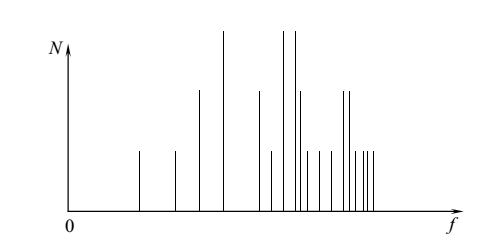
Расчеты
показывают, что в области низких частот спектр имеет выраженный дискретный
характер. Это приводит к тому, что в этой области наблюдаются ярко выраженные
резонансные явления и звуковое поле является сильно
неоднородным.
С ростом частоты количество собственных частот в заданном интервале быстро увеличивается (спектр уплотняется) и, если размеры помещения не очень малы, в области наилучшей слышимости спектр фактически становится сплошным. Практически это означает, что любая составляющая в спектре источника звука будет возбуждать сразу большое количество собственных колебаний с близкими по значению частотами. В таких ситуациях расчет звукового поля с использованием волновой теории становится очень громоздким. В этой области частот удобнее использовать методы статистической акустики.